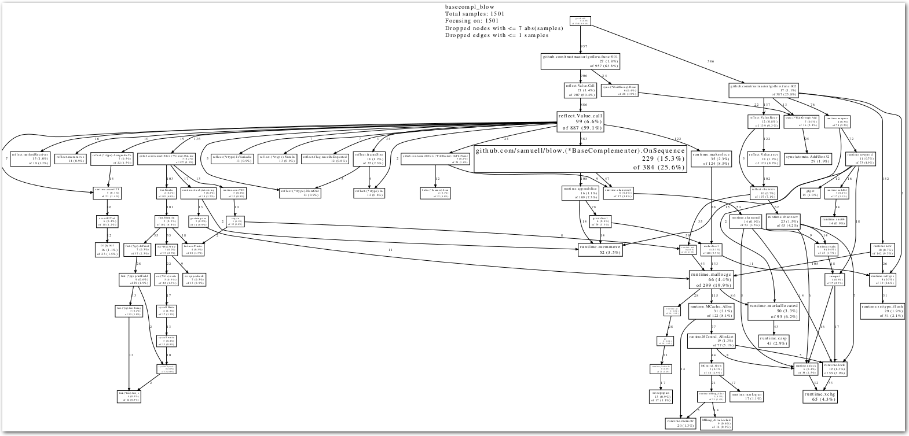
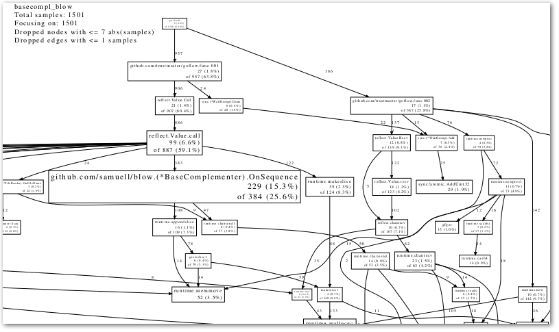

Profiling and creating call graphs for Go programs
In trying to get my head around the code of the very interesting GoFlow library, (for flow-based programming in Go), and the accompanying flow-based bioinformatics library I started hacking on, I needed to get some kind of visualization (like a call graph) ... something like this:

(And in the end, that is what I got ... read on ... ) :)
I then found out about the go tool pprof command, for which the Go team published a blog post on here .
Being a Go newbie, I must admit I had quite a hard time deciphering the blog post though. Maybe it was just a psychological barrier because of all the technological anechdotes, that made it look harder than it actually was. Anyhow, it didn't help that "go run pprof" didn't produce any output if I didn't run processing on a large enough file that it would have time to collect data.
Anyways, with this in mind I wanted to make a slightly easier-to-follow instruction for newbies like me, on how to use "go tool pprof" for profiling and producing call graphs ... but then after I published this post, Dave Cheney pinged me about his excellent profile package, which makes the process even easier, so I went away and updated the blog post to include how to do it both with the profile package, AND with the pprof library itself! :)
Ok, so enough blather, let's get started:
Easy option: Profiling Go programs with the profile package
Easy option Overview: What you will do
- First you will need to put a very small code snippet in your code, that will output a profile-file (named [something].pprof in your /tmp/ folder) when you run your program.
- This profile file can then be used with the "go run pprof" command to do various things like output reports of top functions taking time, and not the least, producing a graphical call graph, which is what I was most interested in here.
Easy option Step 0: Install profile
If you have your GOROOT and GOPATH environment variables correctly setup, you should be able to install it with this simple command:
go get github.com/davecheney/profile
... otherwise you'll have to install it manually from http://github.com/davecheney/profile
Easy option Step 1: Add a line of code, to produce a profile file
-
Add "github.com/davecheney/profile" to your import statement. Something like:
import ( ... your other imports ... "github.com/davecheney/profile" ) -
Add the following line at the beginning of your main() function:
defer profile.Start(profile.CPUProfile).Stop()
… the result should be something like:
func main() {
defer profile.Start(profile.CPUProfile).Stop()
// ... your main code here ...
}
Easy option Step 2: Build your program as usual
Something like:
go build [your program].go
Easy option, Step 3: Run your program long enough to get some profiling data
-
Now run your program as usual
- Note: Make sure it rung long enough to gather data! I had to run my DNA-processing code on a 58MB file rather than my 7.8KB test file I was using first, to get predictable results.
./[your program]
Easy option, Step 4: Copy the cpu.pprof file from /tmp/...
When running the program in the previous step, you will have seen some output like this:
2013/08/08 16:45:58 profile: cpu profiling enabled, /tmp/profile882806532/cpu.pprof
Copy this file to where you are standing right now, with:
cp /tmp/profile[some number]/cpu.pprof .
Read on from step 4 , for the rest of the steps ...
Hard option: Using the pprof library directly
Hard option Overview: What you will do
- First you will need to put in some code snippets (more than in the easy option) in your code, that will output a profile-file (named [something].pprof) when you run your program.
- This profile file can then be used with the "go run pprof" command to do various things like output reports of top functions taking time, and not the least, producing a graphical call graph, which is what I was most interested in here.
Hard option Step 1: Add some code snippets to your code, to produce a profile file
- Add "runtime/pprof" to your import statement. Something like:
import (
... your other imports ...
"flag"
"fmt"
"runtime/pprof"
)
-
Add this just before your main() function:
// Profiling stuff ... from http://blog.golang.org/profiling-go-programs var cpuprofile = flag.String("cpuprofile", "", "write cpu profile to file") -
Add the following code at the beginning of your main() function:
flag.Parse() if *cpuprofile != "" { f, err := os.Create(*cpuprofile) if err != nil { fmt.Println("Error: ", err) } pprof.StartCPUProfile(f) defer pprof.StopCPUProfile() }
... the result should be something like:
// Profiling stuff ... from http://blog.golang.org/profiling-go-programs
var cpuprofile = flag.String("cpuprofile", "", "write cpu profile to file")
func main() {
flag.Parse()
if *cpuprofile != "" {
f, err := os.Create(*cpuprofile)
if err != nil {
fmt.Println("Error: ", err)
}
pprof.StartCPUProfile(f)
defer pprof.StopCPUProfile()
}
// ... your main code here ...
}
This will add a command line flag "-cpuprofile", which you can later use to specify a filename where to write the profiling data.
Hard option Step 2: Build your program as usual
Something like:
go build [your program].go
Hard option Step 3: Run your program long enough to get some profiling data
-
Now run your program, specifying a filename to the -cpuprofile flag, where to store the profiling data
- Note: Make sure it rung long enough to gather data! I had to run my DNA-processing code on a 58MB file rather than my 7.8KB test file I was using first, to get predictable results.
./[your program] -cpuprofile=cpu.pprof
The rest (Same for easy and hard option!)
Step 4: Get some nice output from your profile data
-
Now comes the fun part, where you can do nice stuff with your profile data.
-
My favourite here was to output the callgraph as a PDF file:
go tool pprof --pdf [my program] cpu.pprof > callgraph.pdf
Step 5: Enjoy your callgraph
Let's see what that looks like:

Not too bad, no? (Find the PDF version below as well)
Step 6: Try some other commands
Some other output you might want to do:
-
A textual report:
go tool pprof --text [my program] cpu.pprof > report.txt -
Check the outher options:
go tool pprof 2>&1|less
(Isn't there a nicer way to get a paginated help screen?)
Step 7: Go back to the Go team blog post and learn the advanced options
Now, this might have been an easier start if you are a newbie, but then Dave Cheney's post on profile, and the Go team blog post on runtime/pprof contains info on more advanced use of the pprof tool, so be sure to go back and study it:
- Dave Cheney - Introducing profile, super simple profiling for Go programs
- The Go Programming Language Blog - Profiling Go Programs